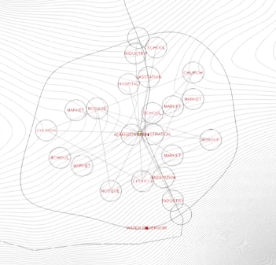
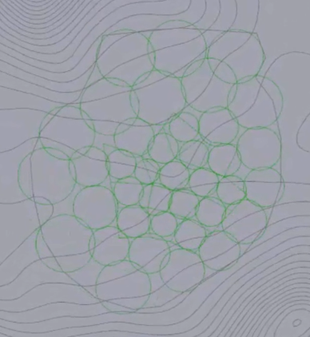

|  |  | |-|-|
Physics engines allow to assign forces to elements like points and simulate their behaviour. Spring forces can try to pull and contract points until they keep a predefined distance to each other and reach an equilibrium state. The springs can represent spatial relations between points and assist in distributing them.
Springs
A line between two points can represent a spring. The spring tries to reach a length in which it is relaxed. By giving it a preferred length, the spring can be controlled.
Boundary conditions
It might not be enough to set the strength of springs only. In many cases other forces as boundary conditions need to be set, such as keeping points on the ground or in a specific area.
Points representing i.e. firestations need to be placed in nearly equal distance to reach all places of a city in a short amount of time. The springs can be set to double the length of the needed radius, in this way the points should try to keep a distance from each other. Furthermore it might be useful to set the area of the city as a boundary condition.
Points of interest are in relation to each other. Each tries to be as close to those that it prefers, reducing the spring length. Additionally a boundary condition can be a radius around the points of interest representing their size allowing them to claim their needed territory.
Grid-like points should be oriented to the terrain. Depending on their position, their spring strength increases or decreases leading to a deformation of the grid in relation to the terrain.